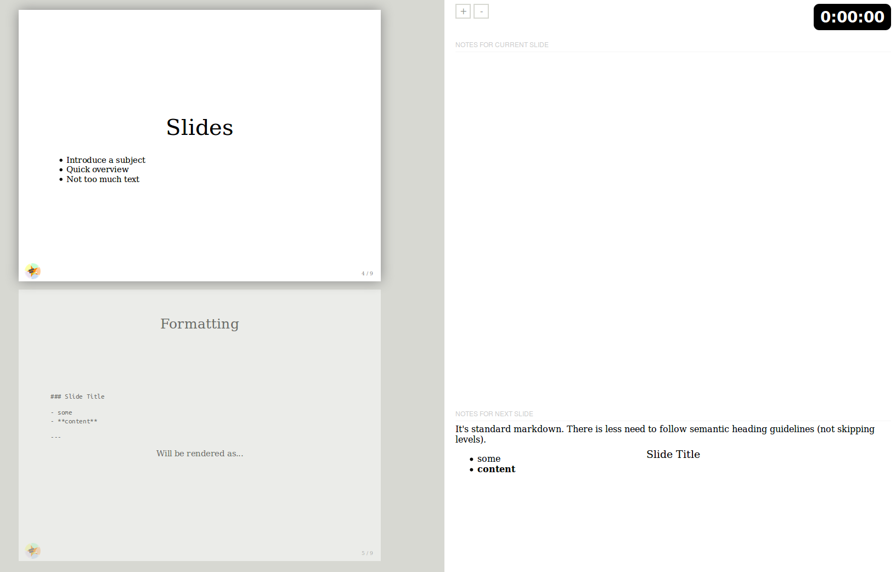
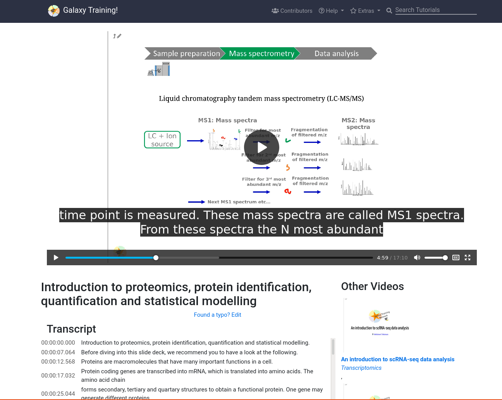

Creating Slides
Contributors
Questions
How to format slides?
How do we add presenter notes?
How to use the features of the slide show tool?
What sort of content should be included in slides?
Objectives
Create a new set of slides
Add presenter comments
Slides
- Introduce a subject
- Quick overview
- Not too much text
- Images are Nice
Speaker Notes
- Slides a great way to introduce an audience to your subject.
- They’re best to use for a quick overview, not a detailed look at the subject.
- Lots of images can be a good choice to communicate information, and avoid slides full of text when possible as learners can get bored or distracted.
Content
- Background information for the tutorial. E.g.:
- Motivation why X is useful
- Concepts needed to get most out of tutorial
- Examples relevant to audience
- Avoid: “here is a feature to add link type tracks”
- Try for: “If you want to visualise SVs in cancer, … this link type tracks are useful”
- Try for: Using examples from existing papers
Speaker Notes
- If your slides are attached to a tutorial, then they can be a good place to provide learners with motivation for the tutorial.
- If you can provide examples that are relevant to your audience, this will encourage them to follow the tutorial.
- Try to avoid dry text and links to external resources whenever possible, those can be best in the tutorial which a learner would read at their own pace, rather than slides which are presented at the presenter’s pace.
Formatting: Basic
.pull-left[ Slide Title
A list
- Item 1
- Item 2
and numbered list
- Item
- Item
Some text with a link and an image:
 ]
]
.pull-right[
### Slide Title
A list
- Item 1
- Item 2
and numbered list
1. Item
2. Item
Some text with a [link](https://example.org/) and an image:

---
]
Slides begin with a title ### ... and should end with a ---
Speaker Notes
- Slides are written with standard markdown, and begin with a header, and end with three dashes.
- Lists, links, and images are all written with their normal syntax.
- If you’re familiar with markdown and already writing your tutorial in it, this should be an easy addition.
- The only differences are the dashes to separate slides, and speaker notes which we’ll cover later.
Formatting: Alignment
.left[Left-aligned text]
.center[Centered text]
.right[Right-aligned text]
.left[]
.center[]
.right[]
.left[Left-aligned text]
.center[Centered text]
.right[Right-aligned text]
.left[]
.center[]
.right[]
Speaker Notes
- Everything can be aligned using several CSS classes which are provided, left, right, and center.
- The classes are added with a dot followed by the class, and then the contents within square brackets.
Formatting: Incremental Text
- Item
Speaker Notes
- Incremental text can be added
–
- Appears
Speaker Notes
- And appears incrementally on every slide.
–
Just separate every item with two dashes (--)
1. Item
--
2. Appears
Speaker Notes
- You can accomplish this with two dashes instead of three for incremental slides.
- The dashes should be on their own line, just like the slide separating dashes.
Formatting: Images
.pull-left[ Demo:
10%
.image-10[ ]
50%
.image-50[ ]
] .pull-right[ Source:
10%
.image-10[

]
50%
.image-50[

]
]
There are other CSS classes available for other sizes
Speaker Notes
- There are a number of CSS classes available to use for styling the content you show on your slides.
- Here you can see images scaled to 10% and 50%.
- There are a number of other classes that you can find in the GTN’s codebase.
Formatting: Tables
.pull-left[ Demo:
column1 | column2 | column3 — | — | — aaaaaaaaaa | bbbb | cccc dddd | eeeeeeeeeeee | ffff gggg | hhhh | iiiiiiiiii ]
.pull-right[ Source:
column1 | column2 | column3
--- | --- | ---
aaaaaaaaaa | bbbb | cccc
dddd | eeeeeeeeeeee | ffff
gggg | hhhh | iiiiiiiiii
]
By default, tables are left-aligned with text left-aligned.
Speaker Notes
- Tables can be written in the simplified markdown syntax, or using a more complex one that allows for alignment.
- Here a simple table is shown with several columns.
- The tables do not need to be aligned, we just did that in this slide for clarity.
Formatting: Tables with Aligned Text
Different alignments for the individual columns can be controlled with the : character
.pull-left[ Demo:
| Tables | Are | Cool |
|---|---|---|
| left-aligned | centered | right-aligned |
| row2 | row2 | row2 |
]
.pull-right[ Source:
| Tables | Are | Cool |
|:-------------|:--------:|--------------:|
| left-aligned | centered | right-aligned |
| row2 | row2 | row2 |
]
Speaker Notes
- If you need more complex tables, you can use the colon character to control the alignment.
- If you are presenting numeric data or similar then this can be useful to make the data more readable.
Formatting: Footnotes
Content with footnotes
Source:
.footnote[Normal footnote with plenty of text]
Demo:
.footnote[Normal footnote with plenty of text]
Speaker Notes
- Footnotes can be used for explanatory notes or adding things like references.
- References are ideal footnote content as they are not necessarily important for comprehension of the slides, but might be useful later for learners.
Formatting: Two Columns
This is achived with the .pull-left and .pull-right classes.
.pull-left[
Some text, as many texts as we want...
or even table
column1 | column2 | column3
--- | --- | ---
row1 | r1c2 | r1c3
row2 | r2c2 | r2c3
row3 | r3c2 | r3c3
]
.pull-right[  ]
Will be rendered as:
Speaker Notes
- Two column layouts can easily be achieved with the pull left and pull right classes.
- The result of this is demonstrated on the next slide.
Formatting: Two Columns
.pull-left[ Some text, as many text as we want…..
or even table
column1 | column2 | column3 — | — | — row1 | r1c2 | r1c3 row2 | r2c2 | r2c3 row3 | r3c2 | r3c3 ]
.pull-right[
]
Speaker Notes
- Any content can be placed in the left and right columns
- The addition of these classes will wrap all of their contents and place them on the left or right sides.
- The two column layout is an especially good choice if you want to show a graphic and discuss some important points related to it.
Presenter Notes
Allows you to:
- See the next slide before the audience
- See notes you have made on your slides

Speaker Notes
- Presenter Mode lets you have two windows with the same slides, one with presenter notes and a preview of the upcoming slide.
- When giving presentations with multiple screens or on a projector, this makes life less stressful.
- You can use the presenter notes to remind you, and others, of important content to mention on each slide.
Presenter Notes: Formatting
.left[
### My Slide
Some text!
???
Things written below the Speaker Notes are only shown in the
presenter view. Press p to bring this up
---
]
Speaker Notes
- Things written below the three question marks are only shown in the presenter view.
- Press P to bring this up, and the question mark to show the presenter view shortcut keys.
Shortcut Keys
- ? activates help
- Escape leaves help
- p activates presenter mode
- f activates full screen mode
- c clones the slides into a popup
Speaker Notes
- The key to close the help isn’t shown in the keyboard shortcuts, but it is the escape key.
- There are a number of other shortcuts which can be useful to know about.
- The clone window function creates a popup with a copy of the slides, this can be used to show the presenter notes on one screen, and the actual slides on another screen that learners can see.
Videos
.pull-left[
- Slides with good speaker notes can be turned into videos
-
Enable this in the metadata of the slides:
title: "Creating Slides" video: true questions: - "How to format slides?" - automatically rendered into narrated videos by the GTN ]
.pull-right[ .image-100[] ]
Speaker Notes
- The GTN automatically creates videos from selected slide decks.
- Simply by setting video to true to the metadata, slides with sufficiently good speaker notes can be automatically turned into videos.
- The slides have audio narration spoken from the script of the speaker notes by AWS Polly.
- The audio clips, and slides are combined into a video which is then available in the GTN Video Library
Key Points
- Slides are often presented before the hands-on portion, provide relevant background information
- Provide examples that are relevant to your audience
Thank you!
This material is the result of a collaborative work. Thanks to the Galaxy Training Network and all the contributors! Tutorial Content is licensed under
Creative Commons Attribution 4.0 International License.
Tutorial Content is licensed under
Creative Commons Attribution 4.0 International License.